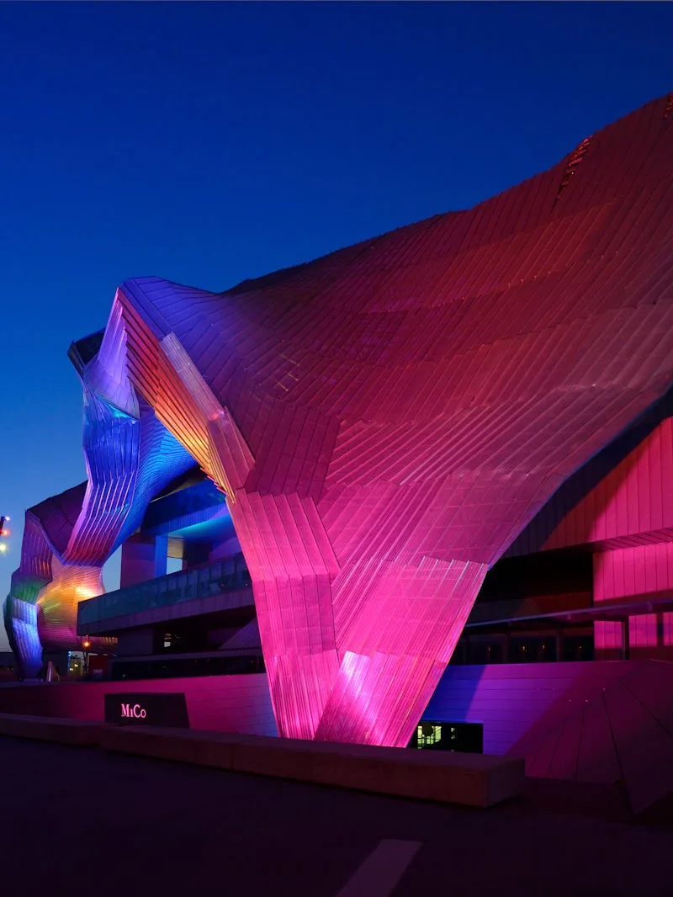

Hotel per congressi all'Allianz MiCo · Tocq Hotel Milano, Porta Garibaldi
Al MiCo in 10 minuti di metro. Senza cambi.
La M5 lilla parte a 3 minuti dal Tocq e ti lascia a Portello, a 50 metri dal centro congressi. La sera sei a Corso Como.
- 8,8/10Expedia · 973 recensioni
- 4,6/5Google
- 9,0/10posizione su Booking.com

Dal Tocq al MiCo
Circa 15 minuti, porta a porta.
- Tocq Hotel MilanoVia Tocqueville 7/D
- 3 min a piedi
- Metro Garibaldi FSlinea M5 lilla
- M5 · 6 fermate · 10 minsenza cambi
- Portellofermata del MiCo
- 1 min a piedi
- Allianz MiCotutti i gate
Dalla stessa fermata si raggiungono tutti i gate, compresi il Gate 2 di Via Eginardo e il Gate 16 di Piazzale Carlo Magno. Anche Fiera Milano City è a Portello.
Calendario Allianz MiCo
Scegli il congresso. Le notti sono già impostate.
Il pulsante apre la prenotazione dalla sera prima all'ultimo giorno del congresso.
- Novembre 2026
- 52° Congresso Nazionale SIRMradiologia · gate 16da confermare
- A@W Architect@Work Milanodata annunciataPrenota le notti
- SIOT 2026109° Congresso Nazionale Ortopedia e Traumatologiadata annunciataPrenota le notti
- Dicembre 2026
- EACVI 2026imaging cardiovascolare (ESC), Gate 4Prenota le notti
- Febbraio 2027
- EAPCI 2027ESC, cardiologia interventisticaPrenota le notti
- Aprile 2027
- miartarte moderna e contemporaneadata annunciataPrenota le notti
Mostra le altre 5 date
- Maggio 2027
- ITI World Symposium 2027implantologia, 5.000+ partecipantida confermare
- ESTRO 2027radioterapia oncologica, circa 8.800 delegatidata annunciataPrenota le notti
- Settembre 2027
- ERS Congress 2027European Respiratory Societydata annunciataPrenota le notti
- CIRSE 2027radiologia interventisticadata annunciataPrenota le notti
- Ottobre 2027
- ECOC 2027comunicazioni otticheda confermare
Date dalle fonti ufficiali (organizzatori, Regione Lombardia), aggiornate al 2026-10-26. Controlla sempre il sito dell'evento prima di partire.
Dopo le sessioni
La cena del congresso, a un minuto dall'hotel.


Le giornate di congresso
Una camera dove lavorare, una sala per incontrarsi.
- Colazione
- Dalle 6:30; da asporto dalle 5:30, per la prima sessione
- La camera
- Con scrivania e wifi veloce, silenziosa sul lato corte
- Una riunione a margine
- Sei sale nello stesso edificio, da 10 a 100 persone
- L'ultimo giorno
- Le valigie restano alla reception fino a sera
- Per ripartire
- Centrale a due fermate di M2, Malpensa Express da Garibaldi
Lo dicono gli ospiti
Le domande che ti fai, le risposte di chi c'è stato.
È comodo per muoversi?
"The location for travelling to the venues was outstanding."
Riesco a dormire?
"I did email in advance to request a quiet room and it was super quiet, even with the window open."
Va bene per lavorare?
"Sempre molto comodo per i miei meeting lavorativi."
Il confronto
Dormire accanto al MiCo, o a dieci minuti?
| Hotel vicino al MiCo | Tocq Hotel Milano | |
|---|---|---|
| Per arrivare al congresso | A piedi | 10 minuti di M5, senza cambi |
| La sera | Quartiere residenziale e di uffici | Corso Como a un minuto, Corso Garibaldi a cinque |
| Una riunione con i colleghi | Da organizzare altrove | Sei sale nello stesso edificio |
| Per ripartire | Metro con un cambio per Centrale | Centrale diretta in M2, Malpensa Express da Garibaldi |
Delegazioni e sponsor
Arrivate in gruppo?
Un blocco di camere e, se serve, una sala per la riunione del gruppo. Una persona segue tutto, dalla richiesta al check-out.
Domande frequenti
Prima di prenotare per un congresso.
La reception risponde 24 ore su 24: +39 02 62071.
Come arrivo all'Allianz MiCo dal Tocq Hotel Milano?
Da Portello si arriva a tutti i gate del MiCo?
Ogni quanto passa la M5?
Posso organizzare una riunione durante il congresso?
A che ora posso fare colazione?
Il Tocq è comodo anche per Fiera Milano City?
Allianz MiCo · Tocq Hotel Milano
Nelle settimane dei grandi congressi Milano si riempie presto.
Prenota appena hai la conferma della tua iscrizione. Con Direct Flex cancelli gratis fino a 24 ore prima.